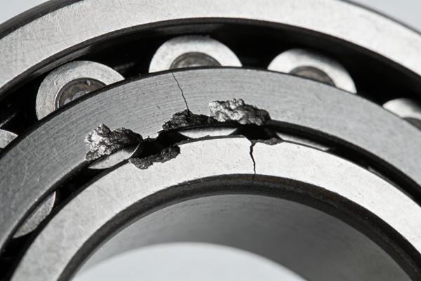
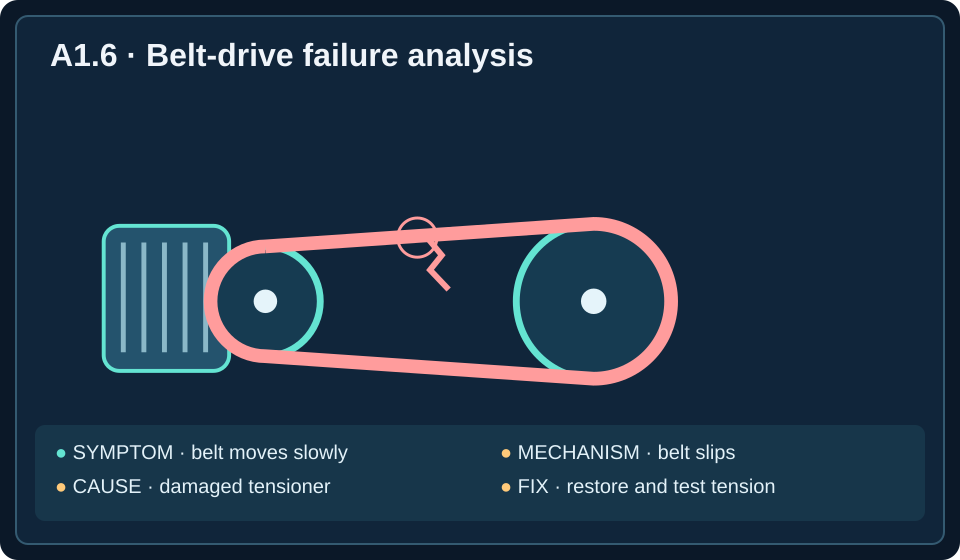
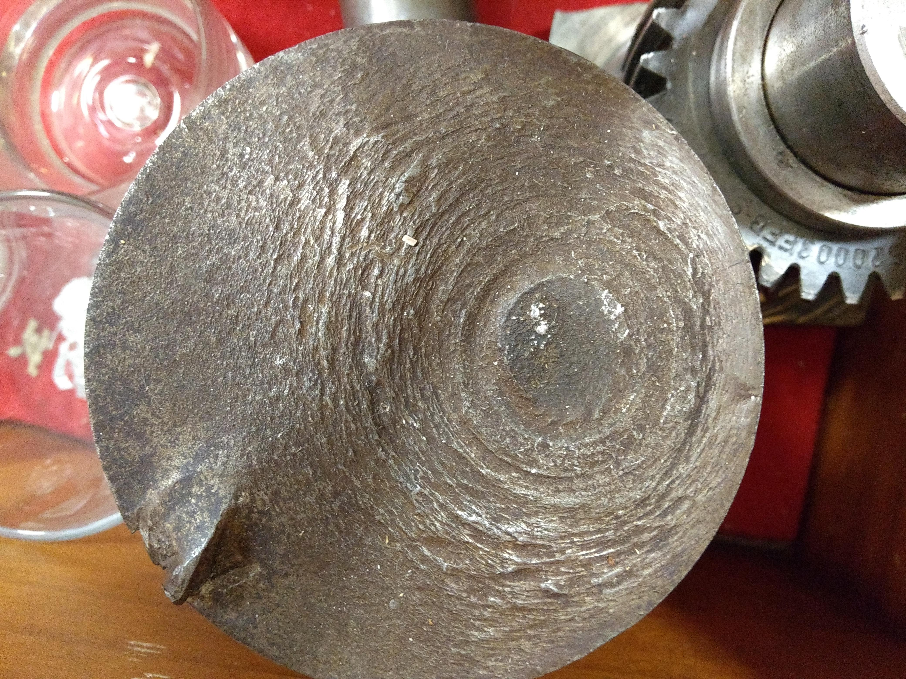
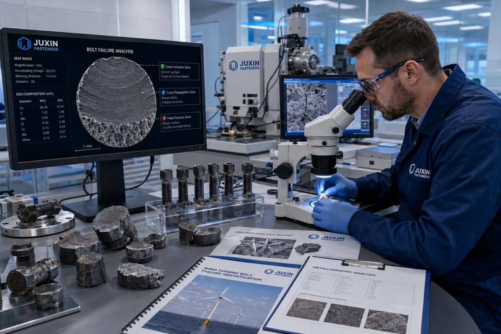
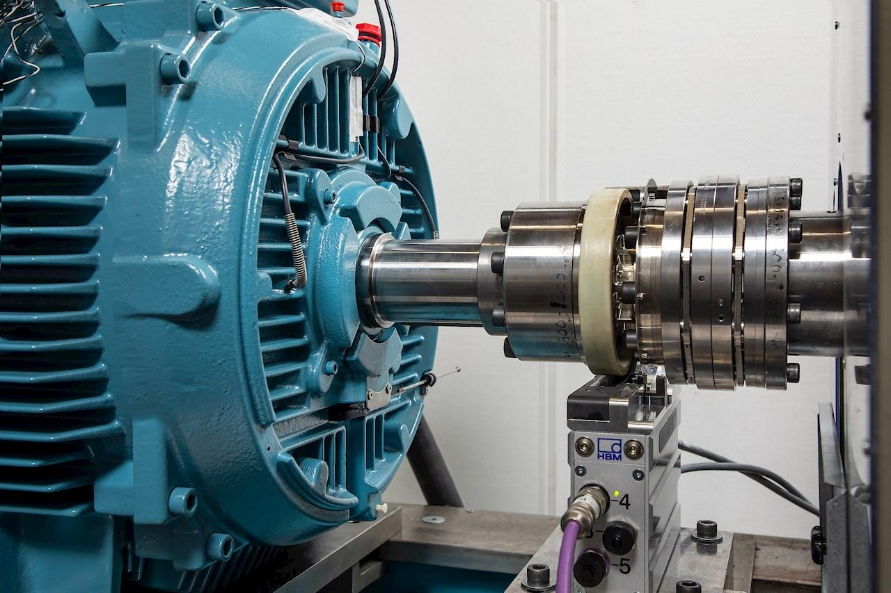

Semester objective A-O1: Explain mechanical engineering roles, ethical obligations, and design considerations.
Supporting objective A-O2: Apply an iterative engineering design process using criteria, constraints, evidence, and documentation.
Unit essential question: How do mechanical engineers use scientific knowledge to develop useful, safe, and reliable technology?
Learning target: Analyze a failure using evidence and recommend preventive measures.
By the end of this lesson, you can: distinguish symptoms, mechanisms, and causes; select evidence that separates competing hypotheses; identify contributing factors; recommend and verify corrective actions; and evaluate whether conclusions exceed the evidence.
A Failure Is Evidence, Not Just a Breakdown
A conveyor stops moving packages even though its motor continues to run. The operator sees the belt slow, hears a squeal, and notices that the drive pulley still turns. These observations tell an engineer that the machine is not performing its intended function. They do not yet explain why. Mechanical engineers investigate failures to understand what happened, determine which explanations are supported by evidence, and reduce the chance of recurrence. A useful investigation moves beyond “the machine broke” toward a specific, testable account of the physical mechanism.
A failure occurs when a component or system cannot meet an intended requirement. A symptom is an observed effect, such as low output speed, a leak, excessive temperature, vibration, or noise. A failure mechanism describes how a part physically stops functioning—for example, a shaft fractures, a belt slips, a bearing seizes, or a fitting loosens. The root cause is an underlying reason that explains why the failure mechanism developed and that a preventive action can address. Sometimes several causes interact; investigators should not force a complex failure into a single simplistic explanation.
Symptoms, Mechanisms, and Root Causes
Imagine a conveyor whose speed drops from the required 0.8 m/s to 0.3 m/s. The reduced speed is a symptom. Inspection finds that the belt is slipping over the drive pulley: that is the immediate failure mechanism. Further inspection reveals a fractured tensioner spring that no longer holds the belt against the pulley. The fractured spring is a specific identified physical cause of the slipping. Investigators may then ask why the spring fractured—perhaps repeated loading, corrosion, an unsuitable material, or an assembly defect. Those deeper explanations require evidence rather than guesswork.
The distinction matters because replacing the belt alone might temporarily restore motion without addressing the broken tensioner. A correct diagnosis links observations to a mechanism and then to an evidence-supported cause. If the spring fracture is known but its origin is not, a careful report says exactly that. Engineers can identify the direct cause without claiming that every deeper contributing factor has been established.
SYMPTOM←Belt slipping
MECHANISM←Fractured tensioner
IDENTIFIED CAUSE


Build a Causal Chain
A causal chain connects the sequence of conditions that produced the failure. Consider a hoist that lifts loads above its rated capacity. Repeated overloads can increase stress in its cable. If its overload alarm has been bypassed, an important protective layer is missing. Over time, cable damage may grow until the cable fails. The overloads and disabled alarm are different contributing factors: one creates damaging conditions and the other allows those conditions to continue without the intended warning or shutdown.
Another example involves a machine that overheats. A blocked cooling vent reduces heat removal, while a disconnected shutdown sensor prevents an automatic response to excessive temperature. Neither observation should be ignored simply because the other appears more direct. Good failure analysis examines both the initiating problem and the failure of safeguards. A contributing factor increases the likelihood or severity of failure but may not be sufficient by itself.
Preserve Evidence Before Choosing a Story
Engineers begin by documenting what is known: measured speeds and temperatures, operating conditions, maintenance records, inspection photographs, damaged components, alarm logs, and witness observations. They distinguish a measurement from a conclusion. “The shaft was fractured at the coupling” is an observation; “the shaft fractured because of misalignment” is a hypothesis until supporting evidence is gathered. A hypothesis is a proposed explanation that can be tested.
A useful evidence log records the source and condition of each item. Measurements should have units and relevant conditions, such as motor temperature at a stated load and ventilation setting. Physical parts may need to be retained for inspection. An investigator should not erase unsuccessful test results, alter maintenance records, or continue unsafe operation merely to collect more data. Accurate documentation supports both technical reasoning and professional responsibility.

Test Competing Explanations
When several causes are possible, engineers choose tests that can discriminate between hypotheses—that is, provide evidence favoring one explanation over another. Suppose a motor overheats. One hypothesis is that the motor is overloaded; another is that its ventilation is blocked. Measuring the operating load and inspecting or measuring cooling airflow directly address these possibilities. Checking the paint color or counting buttons does not.
For a bearing that fails early, two plausible explanations are inadequate lubrication and shaft misalignment. Inspecting lubricant condition and measuring shaft alignment are more informative than replacing the bearing without investigating. For a repeatedly broken conveyor belt, measuring belt tension and examining the pulley contact surface help distinguish excessive tension from damage caused by a sharp pulley edge. In each case, the most useful evidence is the evidence that tests the proposed mechanism.
Tests should be performed under safe, controlled conditions. An investigation may need to stop equipment, isolate energy sources, or use approved inspection procedures. The goal is not to make a damaged machine fail again unnecessarily; it is to collect valid evidence while protecting people.
Measure loadORHypothesis B: blocked cooling
Measure airflow

Correct the Cause, Not Merely the Symptom
A corrective action addresses a demonstrated problem or its cause. A preventive measure reduces the likelihood of the same problem occurring again. If two shafts are misaligned and repeatedly damage a coupling, painting the coupling or changing the display color will not correct the loading mechanism. Proper shaft alignment, installation checks, and verification under operating conditions address the identified problem more directly.
If a belt slips because its tensioner cannot maintain force, repairing or redesigning the tensioner and checking traction under load is more defensible than simply increasing motor speed. If a hydraulic fitting loosens under vibration, the response may involve a suitable vibration-resistant connection, proper assembly procedures, and validation during representative vibration exposure. A proposed fix must be connected to the evidence-supported failure mechanism, not chosen because it is inexpensive or convenient.
Verify That the Fix Actually Works
A repair is not fully verified just because the machine runs once after it is reassembled. Verification means gathering evidence that the corrected design meets defined requirements. Engineers should specify what will be measured, the acceptable result, the relevant load and environment, and the number or range of trials appropriate to the risk. If a conveyor tensioner was redesigned, engineers might measure belt speed and traction while varying package load and repeating operation over time.
A single successful test provides evidence about that particular test, not proof that the machine will never fail. For equipment subject to repeated loading, long-term fatigue may matter even if a part passes one static test. If the original failure occurred at high temperature, high vibration, or full load, verification must consider those conditions. Engineers may also inspect similar units when the evidence justifies doing so, while avoiding unsupported claims that every unit has the same defect.
Do Not Confuse Sequence With Causation
Suppose a gearbox fails two days after maintenance. The timing is relevant and should be investigated, but the fact that maintenance happened first does not prove that maintenance caused the failure. Engineers need a credible physical connection—for example, records showing an incorrect lubricant was installed, followed by inspection evidence consistent with lubrication failure. This distinction is often summarized as correlation is not causation: events occurring together or in sequence do not, by themselves, establish a cause.
The same caution applies when one gearbox fails and someone concludes that every gearbox of that model is defective. One case can reveal a possible design concern and justify broader inspection or testing, but it does not establish a population-wide failure rate. Overgeneralization occurs when a conclusion reaches beyond the evidence available. A responsible engineering report separates confirmed findings, plausible explanations, uncertainties, and additional evidence needed.
Worked Investigation: A Repeatedly Failing Drive
Consider a packaging line with a drive coupling that has failed three times in two months. The symptom is lost conveyor motion. Each time, the motor still rotates, but the driven shaft stops. Inspection shows cracked coupling material. A team proposes four explanations: misalignment, excessive transmitted load, inadequate coupling material, or installation error. The team should not immediately choose the most familiar explanation.
First, technicians isolate the machine and document the damage and operating history. Second, they measure shaft alignment and inspect the coupling installation. Third, they compare measured operating load with the coupling's rated conditions and review material and maintenance records. Suppose the alignment measurement shows the shafts are significantly out of the specified alignment tolerance, while the load and installed part meet their requirements. Misalignment is now a supported explanation for the repeated coupling damage.
The corrective plan is to realign the shafts, verify the alignment during installation, inspect for related damage, and perform controlled operating tests. The verification plan checks alignment, vibration, and motion transfer at representative loads over repeated cycles. The report should state that the evidence supports misalignment in the investigated machine; it should not claim that every machine of this model is defective or that future failure is impossible.
The diagram below summarizes the failure-investigation method used in this example: observe the symptoms, investigate possible causes, correct the supported cause, and verify the result.
Figure 1.6 — Four Steps in Failure Analysis
Observe
Identify symptoms and collect evidence
Investigate
Test possible causes
Correct
Address the identified cause
Verify
Test whether the correction works

How to Write a Defensible Failure Conclusion
A good conclusion answers four questions: What failed? What evidence establishes the mechanism or cause? What corrective action targets that cause? What tests will verify the correction? It also states important limits. “The coupling failed because shaft alignment exceeded the specified tolerance, as measured during inspection” is stronger than “maintenance probably caused it.” A recommendation to realign the shafts and verify operation is stronger than “replace the coupling and hope it lasts.”
When evidence is incomplete, engineers should say so and identify the next useful test. They should not confuse the first visible symptom with the underlying cause, treat a contributing factor as the only possible cause, or claim certainty from one successful trial. This disciplined approach protects users, improves reliability, and turns failure into a source of better engineering decisions.
Unit A1 Synthesis: Think Like an Engineer
Across Unit A1, you have learned that mechanical engineering applies scientific knowledge to useful systems, that systems have inputs, processes, and outputs, and that engineering specialties work together. You have also learned to translate needs into measurable requirements and to evaluate safety and ethical responsibilities. Failure analysis brings those ideas together: identify the system's intended function, compare actual performance with the requirement, examine the mechanism, and use evidence to select and verify an improvement.
The strongest engineering answer is not always the quickest repair or the most confident statement. It is the action that responds to the available evidence, addresses the relevant cause, respects safety and constraints, and honestly acknowledges what remains uncertain. In the interactive investigation, you will practice that reasoning by evaluating evidence and choosing a corrective strategy.
Lesson glossary
Select a term to reveal its definition.
Failure
Inability of a component or system to meet an intended requirement.
Symptom
Observed effect of a problem, such as slow motion, noise, leakage, or overheating.
Failure mechanism
Physical process by which a component stops functioning as intended.
Root cause
Underlying reason for a failure that an effective preventive action can address.
Direct cause
Immediate physical condition that produces the observed failure mechanism.
Contributing factor
Condition that increases failure likelihood or severity without necessarily acting alone.
Causal chain
Linked sequence of conditions and events leading to a failure.
Hypothesis
Testable proposed explanation for an observation.
Evidence
Measurements, records, physical observations, or test results supporting a conclusion.
Discriminating test
Investigation that helps distinguish between competing explanations.
Corrective action
Change intended to address an identified problem or cause.
Preventive measure
Action designed to reduce the chance of recurrence.
Verification
Gathering evidence that a corrected design meets defined requirements.
Fatigue
Progressive damage caused by repeated stress cycles.
Operating conditions
Loads, temperatures, speeds, environments, and other conditions under which equipment is used.
Correlation
Relationship or association between observations that does not alone prove causation.
Causation
Relationship in which a condition actually produces or contributes to an outcome.
Overgeneralization
Drawing a conclusion broader than the available evidence supports.
Uncertainty
Limit on how confidently evidence establishes a conclusion.
Reliability
Ability to perform an intended function over relevant conditions and time.
Engineering Failure Investigation
Investigate a simulated mechanical failure, examine evidence, compare explanations, and select a corrective design strategy. Get immediate feedback and retry your decisions.
Open the investigation in a new tab
Lesson summary
Engineering failures often result from several interacting causes rather than one simple mistake. Investigators examine evidence, distinguish observations from assumptions, consider technical and human factors, and avoid conclusions that go beyond the data. Engineers use failure investigations to identify root causes, recommend corrective actions, and test whether changes actually improve safety and reliability.